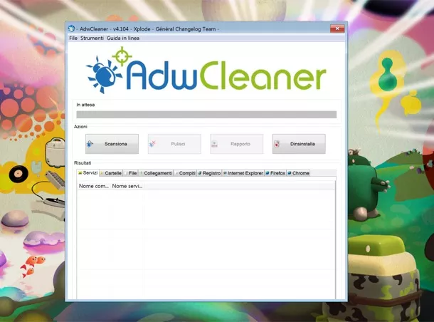
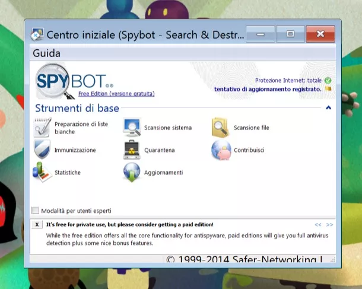

Nell’accezione più comune del termine, gli adware sono dei software malevoli che una volta installati sul PC “bombardano” l’utente con una serie di messaggi pubblicitari, spesso sotto forma di finestre pop-up, che finiscono col rallentare il sistema e rimandano quasi sempre a siti poco raccomandabili. A differenza degli spyware, non trasmettono le informazioni personali degli utenti a entità remote (ossia ai malintenzionati che ne curano lo sviluppo) ma effettuano comunque un’attività di tracciamento che monitora le abitudini della vittima online. Vanno dunque estirpati ed oggi sono qui per spiegarti come. Per fortuna, tutto quello di cui c’è bisogno sono alcuni programmi gratuiti che consentono di eliminare adware in pochi click: quelli illustrati di seguito sono i migliori su piazza.

Se vuoi scoprire come eliminare adware, il primo programma che ti consiglio di provare è Adwcleaner che riesce a debellare velocemente moltissimi software malevoli, soprattutto quelli che mostrano pubblicità e modificano le impostazioni del browser con toolbar, home page e motori di ricerca personalizzati. Funziona senza richiedere installazioni e non “pesta i piedi” all’antivirus.
Per scaricare Adwcleaner sul tuo PC, collegati al suo sito Internet ufficiale e fai click prima sulla voce Click here to download AdwCleaner e poi sul pulsante Download Now. A download completato, avvia il programma adwcleaner_4.xx.exe e clicca prima su Sì e poi su J’Accepte/I Agree per accettare le condizioni d’uso del software e accedere alla sua schermata principale.
Nella finestra che si apre, premi il pulsante Scansiona e attendi qualche secondo affinché venga eseguita la scansione del sistema, dopodiché clicca su Pulisci, poi su OK tre volte consecutive e aspetta che il computer venga riavviato per completare l’opera di pulizia.

Altro programma che vale la pena usare nella guerra contro gli adware è Spybot che offre una protezione completa contro tutti i principali tipi di malware. È disponibile anche in una versione a pagamento che controlla il sistema in tempo reale (come gli antivirus) ma per quello che serve a te basta e avanza l’edizione free.
Collegati dunque al sito Internet del programma e clicca sul pulsante rosso Scarica collocato in fondo alla colonna Free. Nella pagina che si apre, pigia su uno qualsiasi dei bottoni con su scritto Download (sotto la dicitura Download senza pubblicità su Safer-Networking Ltd.) e fai click su Download per avviare lo scaricamento di Spybot.
A download completato, apri il pacchetto d’installazione del software (es. spybot–2.4.exe) e clicca prima sul bottone Sì e poi su OK e Avanti tre volte consecutive. Accetta quindi le condizioni d’uso di Spybot, apponendo il segno di spunta accanto alla voce Accetto i termini del contratto di licenza, e concludi il setup facendo click prima su Avanti e poi su Installa e Fine.
A installazione completata, clicca sul pulsante Aggiornamenti presente nella finestra di Spybot e attendi qualche secondo affinché Spybot esegua l’aggiornamento delle definizioni antimalware. Dopodiché seleziona la voce Scansione sistema e aspetta che il software porti a termine il suo lavoro di pulizia.
Link download: Spybot